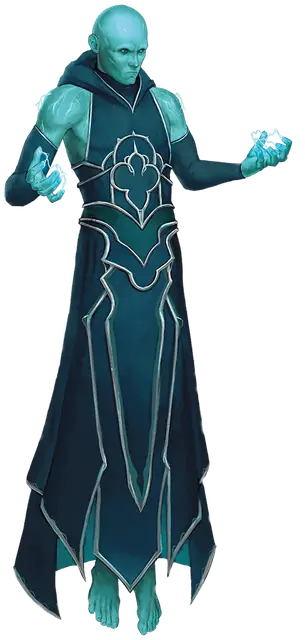

Гальван маген
Galvan Magen
Средний Конструкт, без мировоззрения

Класс Доспеха 14
Хиты 68 (8к8 + 32)
Скорость 30 футов, летая 30 футов (парит)
| мод | спас | ||
|---|---|---|---|
| СИЛ | 10 | +0 | +0 |
| ЛОВ | 18 | +4 | +4 |
| ТЕЛ | 18 | +4 | +4 |
| мод | спас | ||
|---|---|---|---|
| ИНТ | 12 | +1 | +1 |
| МДР | 10 | +0 | +0 |
| ХАР | 7 | −2 | −2 |
Иммунитет к урону электричество, яд
Иммунитет к состояниям отравление, паралич, очарование, испуг, истощение
Чувства пассивное Восприятие 10
Языки Понимает языки своего создателя, но не говорит.
Опасность 3 (700 опыта)
Бонус мастерства +2
Особенности
Пламенная смерть. Когда маген умирает, его тело распадается в безвредной вспышке огня и дыма, оставляя после себя все, что он носил или нёс.
Сопротивление магии. Маген совершает с преимуществом спасброски от заклинаний и прочих магических эффектов.
Неестественная природа. Маген не нуждается в воздухе, еде, питье и сне.
Действия
Мультиатака. . Маген совершает две атаки шоковым прикосновением.
Шоковое прикосновение. . Рукопашная атака оружием: +6 к попаданию, досягаемость 5 футов, одна цель. (Маген совершает с преимуществом, если цель носит доспех из металла). Попадание: 7 (1к6 + 4) урона электричеством.
Статический разряд (Перезарядка 5-6). . Маген выпускает молнию в 60-футовую линию шириной 5 футов. Каждое существо на этой линии должно совершить спасбросок Ловкости Сл 14 (с помехой, если существо носит доспех из металла), получая 22 (4к10) урона электричеством при провале и вдвое меньше урона при успехе.
Описание
Магены - это магические, человекоподобные существа, созданные заклинанием сотворение магена [create magen] или другими магическими методами.
Хотя маген и выглядят как гуманоид с зеленой кожей, он являются конструктом. Когда он ранен, видно, что его кровь имеет цвет и консистенцию ртути. Он существует исключительно благодаря магии. Когда он умирает, его тело исчезает во вспышке безвредного огня и облаке дыма, которое быстро рассеивается.
Магические слуги. Магены - идеальные слуги. При сотворении магена каждому прививается инстинкт защиты себя и своего создателя, и он без колебаний следует указаниям своего создателя. Когда приказ выполнен, маген встает неподвижно и замолкает, пока его создатель не отдаст новый приказ.
Гальван магены могут летать. Они также накапливают статическое электричество, которое разряжают в виде молний.